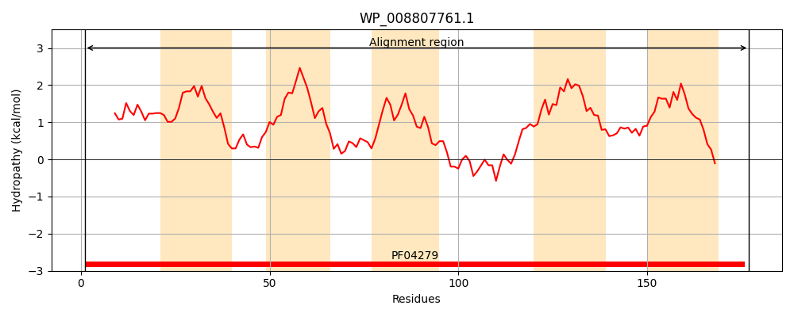
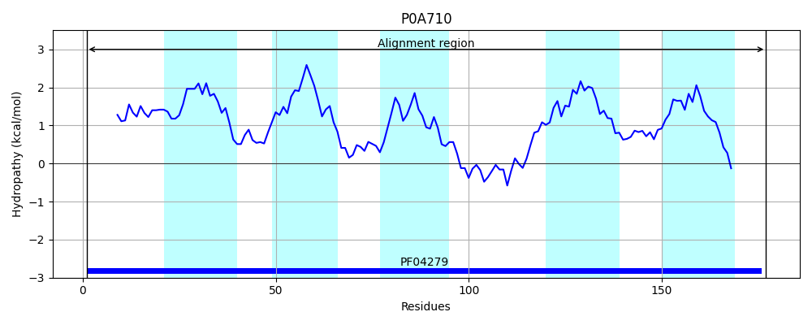
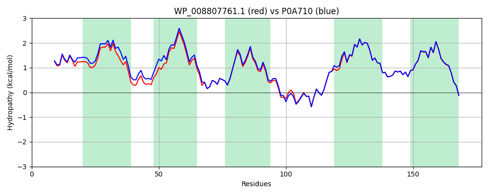

Hit Accession: P0A710
Hit TCID: 9.B.357.1.1
Hit Description: gnl|BL_ORD_ID|8607 gnl|TC-DB|P0A710|9.B.357.1.1 Probable intracellular septation protein A OS=Escherichia coli (strain K12) OX=83333 GN=yciB PE=1 SV=1
Mach Len: 177
e:0.000000
Query TMS Count : 5
Hit TMS Count: 5
TMS-Overlap Score: 4.850000
Predicted Substrates:None
BLAST Alignment:
Score: 881 , Bit scores: 343 bits, E-value: 4.4e-123, Alignment length: 177, Percentage identity: 94
Query: 1 MKQFLDFLPLVVFFAFYKLYDIYAATTALIVATAIVLIYSWVRYRKVEKMALITFVLVAVFGGLTLFFHNDEFIKWKVTVIYALFAGALLFSQWVMKKPLIQRMLGKELALPQQVWSRLNLAWAVFFILCGLANIYIAFWLPQNIWVNFKVFGLTALTLVFTLLSGIYIYRHMPQDD 177
MKQFLDFLPLVVFFAFYK+YDIYAAT ALIVATAIVLIYSWVR+RKVEKMALITFVLV VFGGLTLFFHNDEFIKWKVTVIYALFAGALL SQWVMKKPLIQRMLGKEL LPQ VWS+LNLAWAVFFILCGLANIYIAFWLPQNIWVNFKVFGLTALTL+FTLLSGIYIYRHMPQ+D
Sbjct: 1 MKQFLDFLPLVVFFAFYKIYDIYAATAALIVATAIVLIYSWVRFRKVEKMALITFVLVVVFGGLTLFFHNDEFIKWKVTVIYALFAGALLVSQWVMKKPLIQRMLGKELTLPQPVWSKLNLAWAVFFILCGLANIYIAFWLPQNIWVNFKVFGLTALTLIFTLLSGIYIYRHMPQED 177 | Protein Hydropathy Plots: |
|---|
|  |  |
Pairwise Alignment-Hydropathy Plot:
|
|---|
|  |